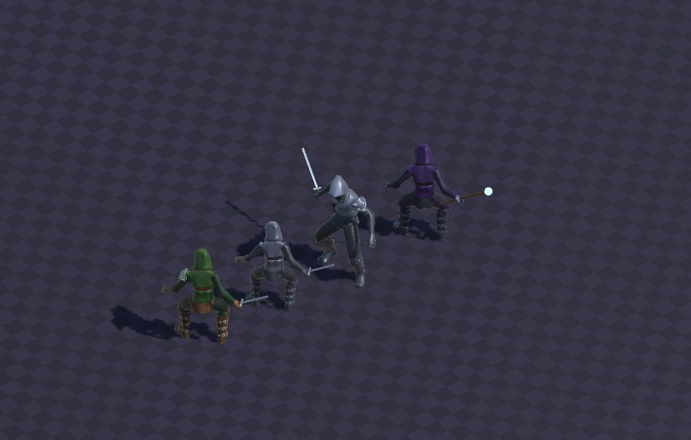
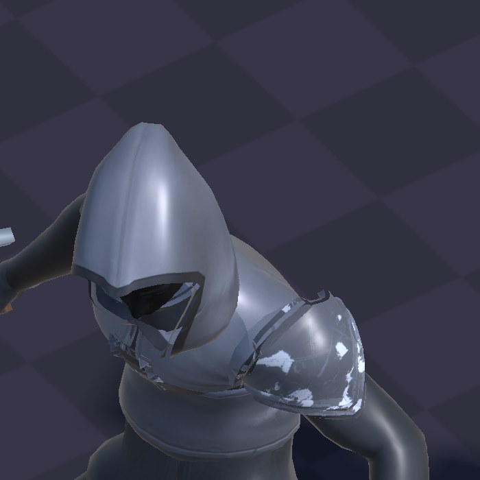
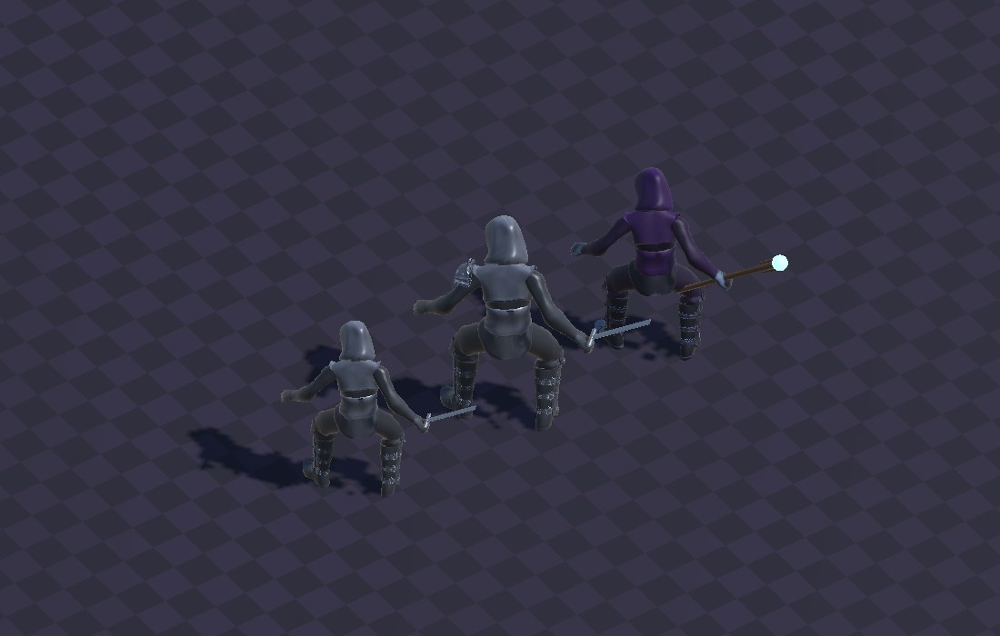
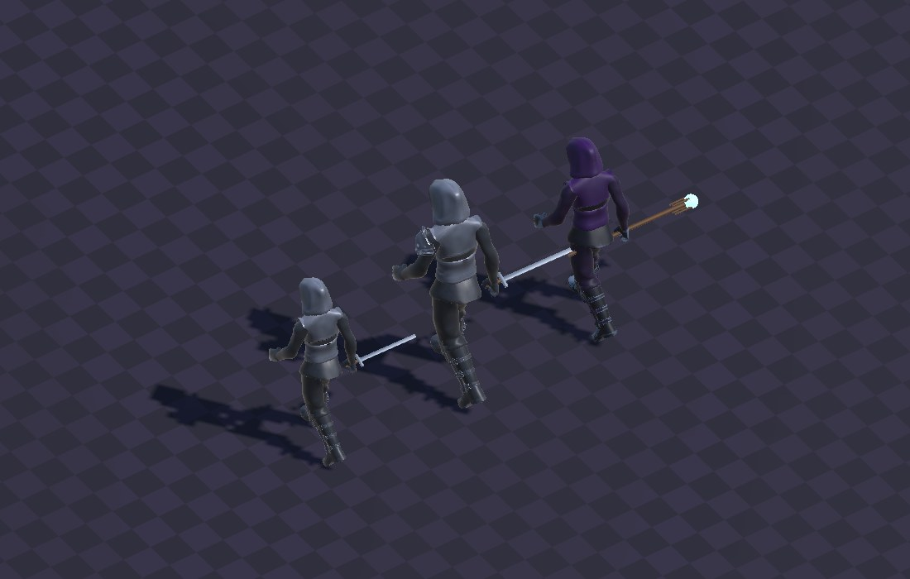
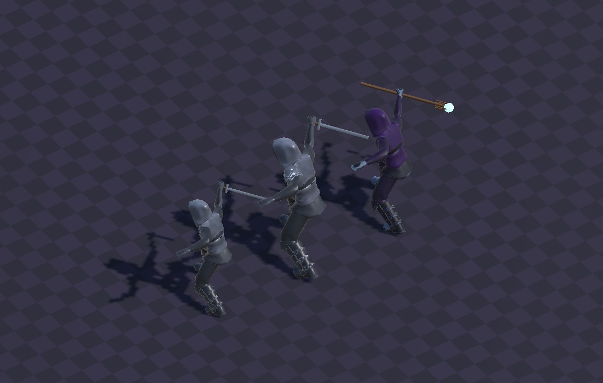
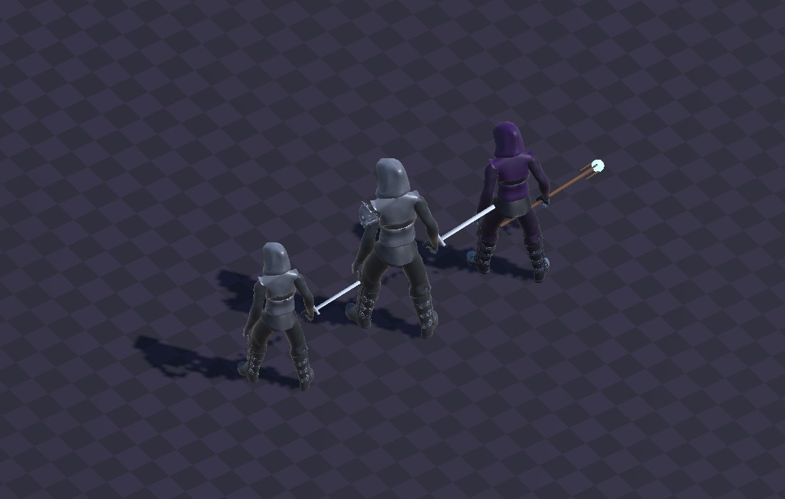
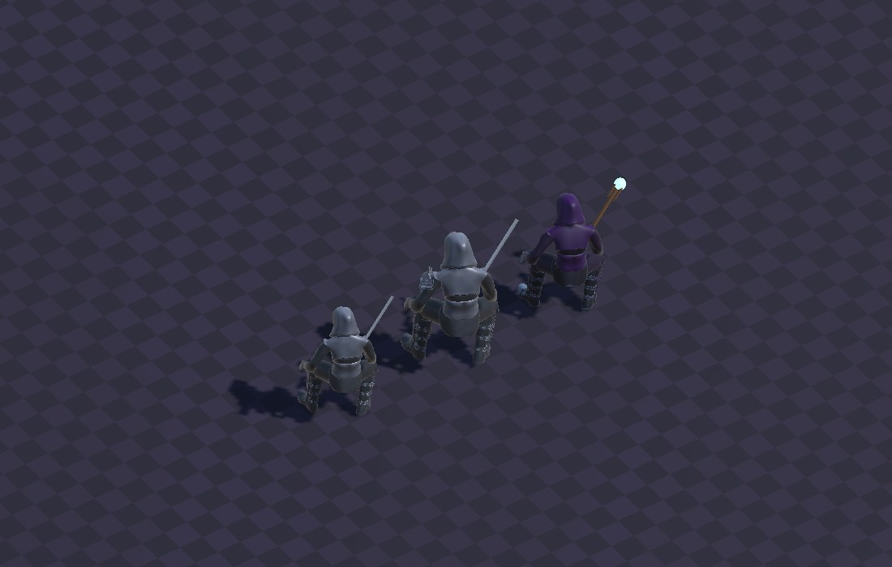

地城迴響 · 敵人素材驗證
亡靈鎧甲：與玩家同一副素體
敵人不再是外來素材。用玩家同一副 Quaternius 素體，穿滿板甲加兜帽， 臉的位置處理成一片虛空。比例、動畫、骨架全部天生一致。
這些是素材驗證截圖，不是 Demo 畫面。地城房間、實際戰鬥、虛擬搖桿、 換裝按鈕都還沒做。畫面裡的格子地板是除錯用底圖，不是關卡美術。
為什麼換掉原本的骷髏
第一版用的是 KayKit 的 CC0 骷髏包。模型與動畫都沒問題，但跟玩家放在同一個畫面 就露餡了——量出來的頭身比是 1 : 2.5（大頭卡通）對上玩家的 1 : 4.5（寫實）。 身高可以調，頭身比調不掉。

找過 Quaternius 自家的替代品：Ultimate Monsters 的 45 個模型裡沒有骷髏， 全站也沒有骷髏包，他們家的 "Skeleton" 全部是沒有綁骨的靜態裝飾道具。 所以改走「同一副素體做成亡靈鎧甲」——代價是做不出裸露的骨頭，這是題材上的讓步。
現在的樣子

| 身高 | 頭高 | 頭身比 | |
|---|---|---|---|
| 玩家 | 2.07 m | 0.46 m | 1 : 4.5 |
| 亡靈 | 1.91 m | 0.42 m | 1 : 4.5 |
頭身比從 2.5 對 4.5 變成 4.5 對 4.5。這是同一副素體的必然結果， 不是調出來的。

動作





驗證數字
| 項目 | 數字 | 判定 |
|---|---|---|
| 動畫實動 | 40 個取樣 transform，36 個位移 | 通過 |
| 動畫 clip | 43 個全載入 | 通過 |
| 臉部虛空 | 膚色像素 92 / 490,000（0.019%），門檻 0.15% | 通過 |
| 素體區塊材質 | 五塊全部亮度 0.047 | 通過 |
| 花費 | $0（CC0） | — |
「動畫有沒有真的綁上」不能看靜態截圖。沒綁上的症狀是角色站著不動， 跟「idle 正常播放」在截圖上長得一模一樣。所以是比對兩個時間點的骨骼世界座標， 而且兩端都要落在動畫播放中——第一次就是取到「還沒開始播」那段， 量出 0 並誤判成動畫壞掉。
「臉夠不夠黑」也不能用平均亮度。那個數字永遠會被亮鋼兜帽拉高， 跟兜帽底下看不看得到臉是兩回事。改成直接掃膚色像素——量失敗模式本身， 不拿亮度當代理指標。
效能（編輯器基準，不是實機）
| 情境 | 平均 | p95 | 最差幀 |
|---|---|---|---|
| 20 隻亡靈 | 106.0 fps | 90.8 fps | 22.3 fps |
| 20 隻亡靈 + 滿場粒子 | 107.6 fps | 92.2 fps | 72.2 fps |
這組數字還不能拿來過關。跑在 M1 Pro 的編輯器上、視窗只有 585×768。 加了 7200 顆粒子上限幀數卻沒掉，那不是「特效很便宜」，是這個解析度下 fill rate 根本沒被壓到——iPhone 是 1284×2778，量級完全不同。實機數字還沒拿到。
一個真的要處理的數字：20 隻的生成成本是 456 ms（每隻 22.8 ms）， 一次生成會是看得見的卡頓。每隻都要跑一次骨權重分區與 mesh 重建—— 解法是共用切好的 mesh，或把生成分攤到多幀。